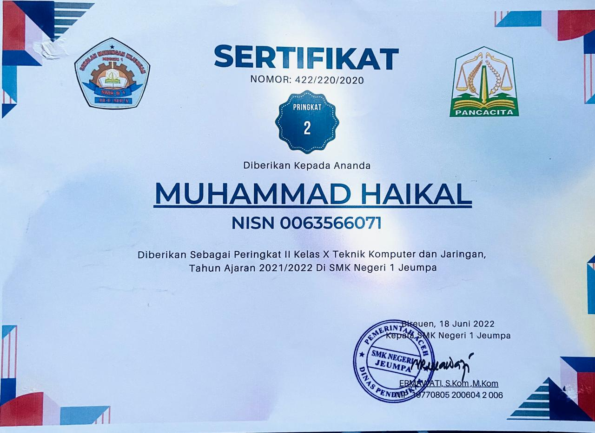
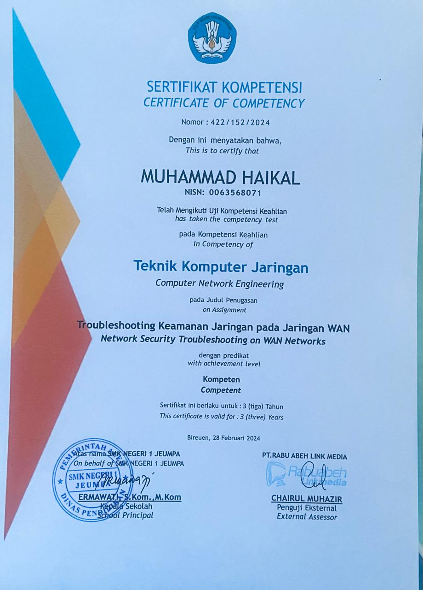
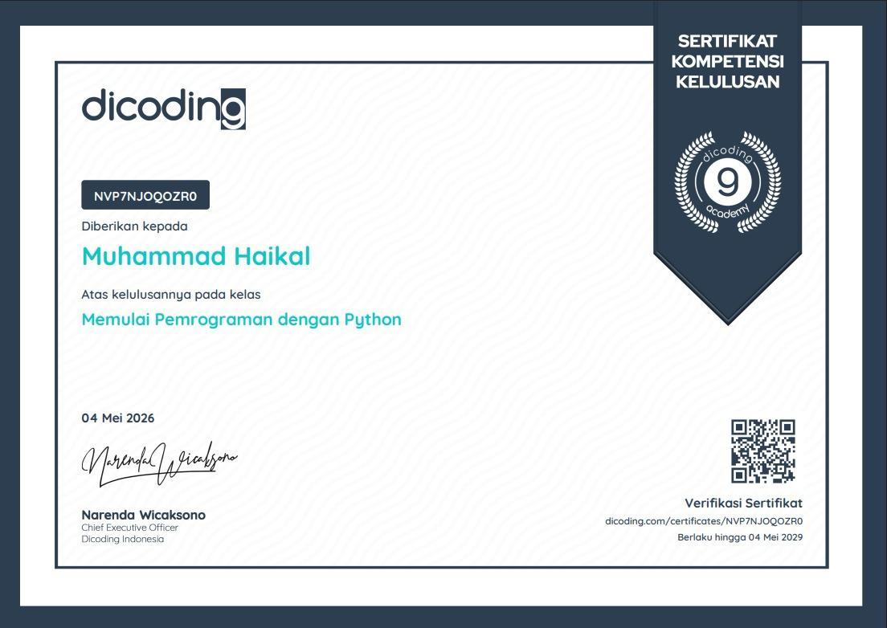
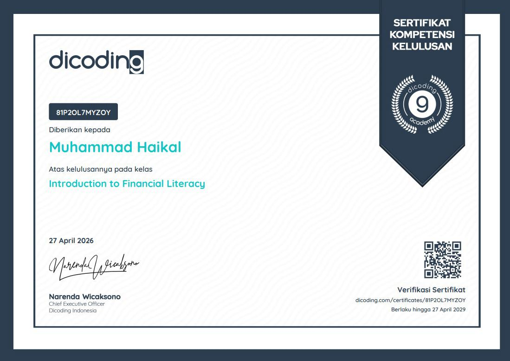
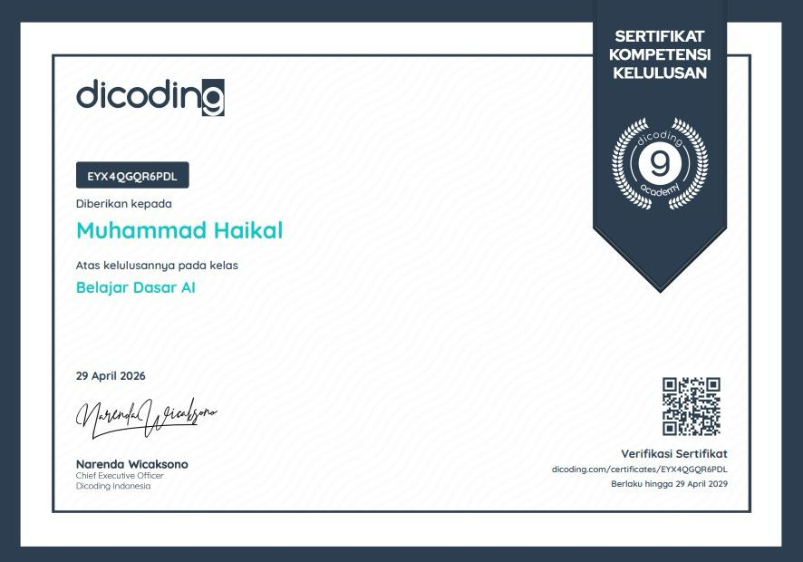
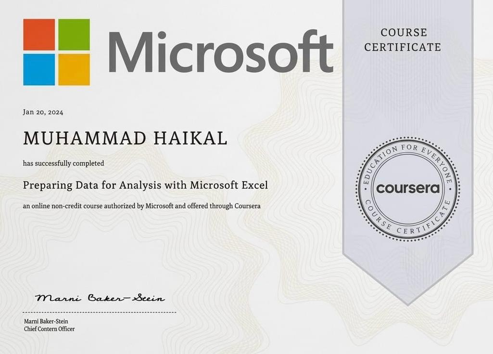
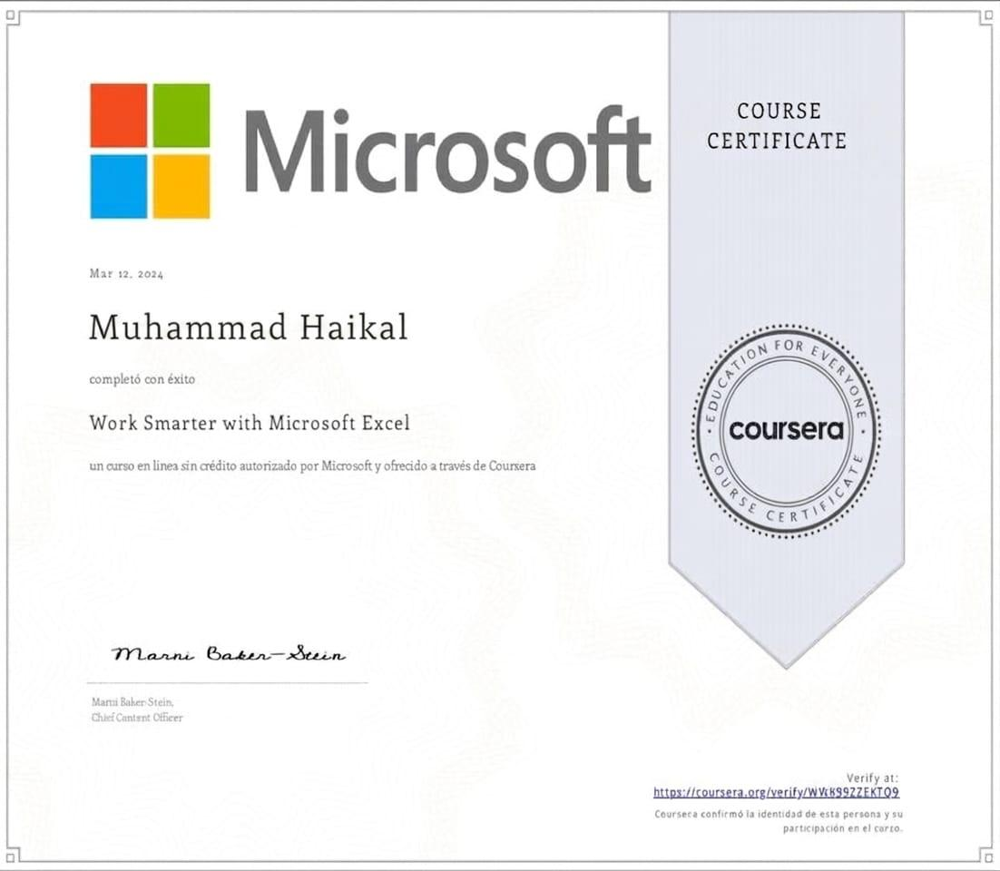
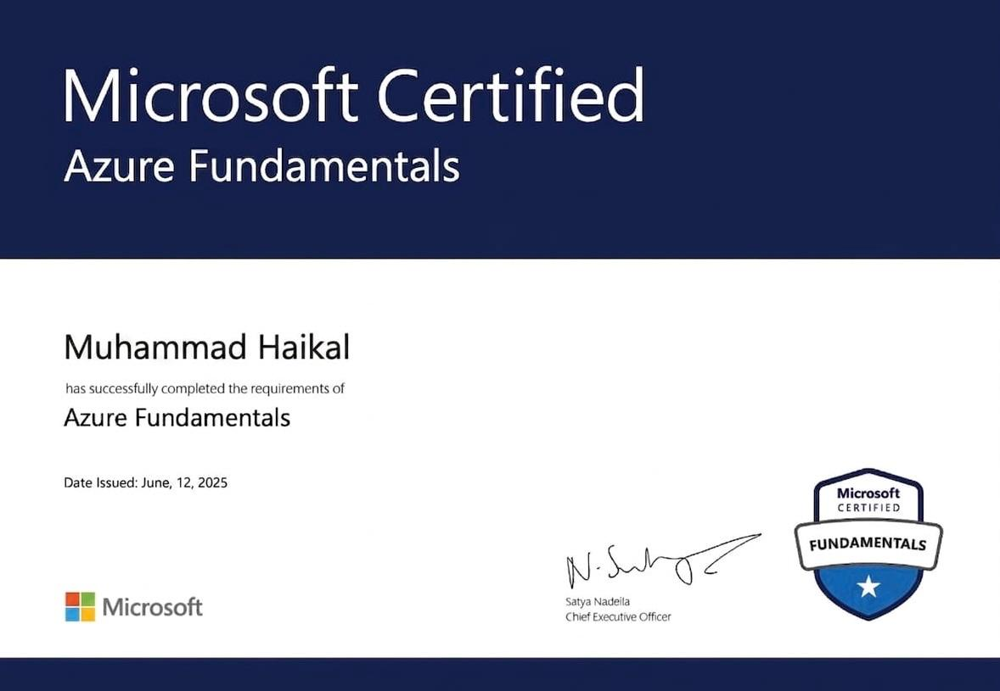
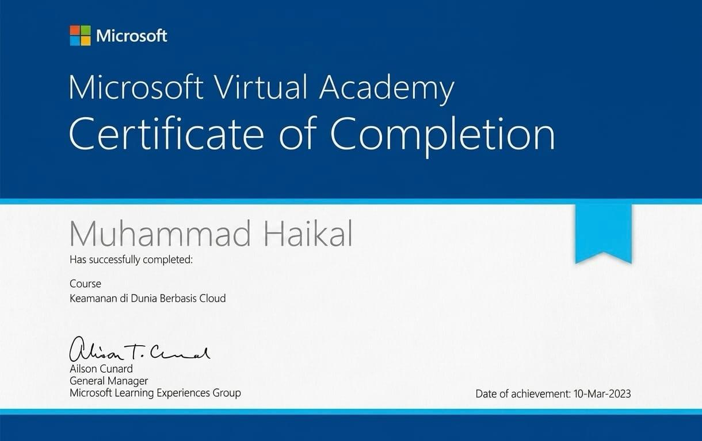

Latar Belakang Pendidikan
Lulus pendidikan menengah dengan predikat sangat memuaskan, meraih peringkat nilai tertinggi di jurusan Teknik Komputer & Jaringan.
Academic Consultant, Assignment Mentor & Academic Writer / Informatics Student
Lulusan TKJ 2024, sekarang menempuh S1 Informatika. Saya membantu mahasiswa, pelajar, dan pendidik menyelesaikan tugas akademik lintas jurusan — sekaligus aktif di academic consulting & scientific writing, sambil membangun proyek web & teknologi.
Academic Writer & Task Helper
Informatics Student
Aceh, IndonesiaDari ruang kelas ke proyek nyata.
Lulus pendidikan menengah dengan predikat sangat memuaskan, meraih peringkat nilai tertinggi di jurusan Teknik Komputer & Jaringan.
Magang 6 bulan di bagian administrasi & manajemen data salah satu universitas di Aceh: pengarsipan, pengelolaan dokumen, dan pengolahan data internal.
Aktif membantu proyek akademik dari jurusan Kesehatan, Hukum, Informatika, Manajemen, Ekonomi, Akuntansi, Keperawatan, Pendidikan — termasuk tugas PPG (modul & bahan ajar).
Satu kepala, banyak kompetensi.
Konsultasi akademik lintas jurusan: membantu menentukan topik, kerangka tugas, dan strategi penyelesaian.
Pendampingan penyelesaian tugas dari awal sampai akhir — membimbing proses, bukan menggantikan.
Penulisan artikel ilmiah, makalah, dan jurnal dengan kaidah akademik yang benar (sitasi, metodologi, struktur).
HTML, CSS, JavaScript.
Word, Excel, PDF Editor.
Lintas jurusan.
Presentasi & komunikasi.
Berpikir analitis.
Makalah, jurnal, esai, laporan praktikum.
Desain visual & layout.
CapCut, VN, Canva Video.
Administrasi profesional.
Koreksi & penyuntingan.
Sekilas tentang saya, dalam video.
Beberapa hal yang sudah saya kerjakan.
Pengembangan website responsif dengan teknologi modern.
Penyelesaian tugas akademik berkualitas & tepat waktu.
Dokumen profesional dengan layout & typography menarik.
Editing video dengan efek visual & storytelling.
Bukti hitam di atas putih. Galeri sertifikat akan terus diperbarui.









Haikal Academic Service
Bantuan tugas akademik secara profesional dan etis untuk mahasiswa, pelajar, dan pendidik — kini juga mencakup Academic Consultant, Assignment Mentor, dan Academic & Scientific Writing. Fokus pada tugas, makalah, artikel, jurnal, laporan, riset, dan kebutuhan akademik dari berbagai jurusan (Kesehatan, Hukum, Informatika, Manajemen, Ekonomi, Keperawatan, Pendidikan). Kami mendukung proses belajar, bukan menggantikan peran Anda.
🔗 Kunjungi Halaman Jasa Saya